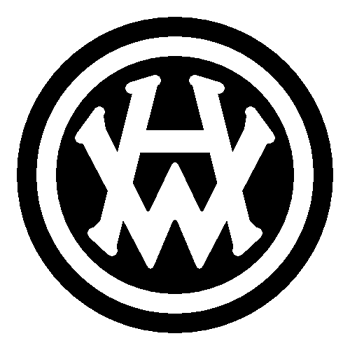

해럴드 앤 울프 Harland and Wolff
해럴드 앤 울프(Harland and Wolff)는 1861년에 설립된 영국의 조선·철구조물 제작 기업이다. 선박 수리, 조선, 해양 건설을 전문으로 한다.
최종 업데이트

해럴드 앤 울프는 어떤 브랜드인가
해럴드 앤 울프는 선박 수리, 조선, 해양 건설을 전문으로 하는 영국 기업이다. 본사는 런던에 있으며 벨파스트, Arnish, Appledore, Methil에 사업장을 두고 있다.
현재는 방위, 에너지, 크루즈·페리, 재생에너지, 상업 부문을 지원하는 데 집중한다. 기술 서비스, 제작·건설, 수리·유지보수, 운용 지원, 개조, 해체 서비스를 제공한다.
5년 사이 두 번째로 법정관리에 들어갔으며, 2025년 1월 Navantia에 인수되었다. 20세기 초에는 White Star Line의 대형 여객선 대부분을 건조한 것으로 알려져 있다.
해럴드 앤 울프는 어떻게 시작되고 성장했나
해럴드 앤 울프는 1861년 Edward Harland와 함부르크 출신 Gustav Wilhelm Wolff가 설립했다. 1858년 Harland는 당시 총괄 매니저로서 고용주 Robert Hickson에게서 Queen's Island의 작은 조선소를 인수했다.
이후 조수였던 Wolff를 동업자로 삼았고, 새로 법인화된 조선소가 처음 건조한 세 척은 Bibby Line을 위한 것이었다. Harland는 상부 갑판을 목재에서 철재로 바꾸고 선체 바닥을 더 평평하게 하는 등의 개선을 이루었다.
1895년 Harland가 사망한 뒤 William James Pirrie가 회장이 되어 1924년까지 맡았다.
해럴드 앤 울프의 브랜드 아이덴티티는 무엇인가
해럴드 앤 울프는 Titanic을 건조한 조선소로 알려진 영국 기업이다. 벨파스트에서 출발해 조선, 수리, 해양 건설로 사업을 이어 왔다.
해럴드 앤 울프의 대표 제품과 서비스는 무엇인가
해럴드 앤 울프는 20세기 초 White Star Line의 대형 여객선 대부분을 건조했으며, 여기에는 Olympic급 세 척인 RMS Olympic, RMS Titanic, HMHS Britannic이 포함된다. 이 밖에 Royal Navy의 HMS Belfast, Royal Mail Line의 Andes, Shaw, Savill & Albion의 Southern Cross, P&O의 Canberra 등을 건조했다.
제1차 세계대전 중에는 Abercrombie급 모니터함과 순양함을 건조했다. 2022년에는 Team Resolute의 일원으로 Royal Fleet Auxiliary의 Fleet Solid Support 선박 3척 건조 계약을 따냈다.
해럴드 앤 울프는 지금 어떤 상태인가
해럴드 앤 울프는 본사를 런던에 두고 벨파스트, Arnish, Appledore, Methil에서 사업장을 운영한다. 5년 사이 두 번째로 법정관리에 들어간 뒤 2025년 1월 Navantia에 인수되었다.
현재는 방위, 에너지, 크루즈·페리, 재생에너지, 상업의 다섯 부문을 지원하는 데 집중한다.
해럴드 앤 울프 로고는 어떻게 변해왔나
자주 묻는 질문
해럴드 앤 울프는 어느 나라 브랜드인가요?
해럴드 앤 울프는 영국의 에너지·산업재 브랜드입니다.
해럴드 앤 울프는 언제 설립되었나요?
해럴드 앤 울프는 1861년 설립되었습니다.
해럴드 앤 울프의 브랜드 아이덴티티는 무엇인가요?
해럴드 앤 울프는 Titanic을 건조한 조선소로 알려진 영국 기업이다.
해럴드 앤 울프의 대표 제품은 무엇인가요?
해럴드 앤 울프는 20세기 초 White Star Line의 대형 여객선 대부분을 건조했으며, 여기에는 Olympic급 세 척인 RMS Olympic, RMS Titanic, HMHS Britannic이 포함된다.
해럴드 앤 울프는 현재 어떤 상태인가요?
해럴드 앤 울프는 본사를 런던에 두고 벨파스트, Arnish, Appledore, Methil에서 사업장을 운영한다.
해럴드 앤 울프의 창업자는 누구인가요?
해럴드 앤 울프의 창업자는 Edward Harland, Gustav Wilhelm Wolff입니다(위키데이터 기준).
해럴드 앤 울프의 본사는 어디에 있나요?
해럴드 앤 울프의 본사는 벨파스트에 있습니다(위키데이터 기준).
출처와 검증
해럴드 앤 울프 관련 참고: 공식 웹사이트 · 위키데이터 Q848977 · 한국어 위키백과 · 영어 위키백과. 브랜드명은 한글과 원어를 함께 표기하되 데이터에 없는 표기는 만들지 않습니다. 기원 국가·설립연도는 검수된 정의문에서 확인된 값을 우선하고, 없을 때만 공식 웹사이트 URL이 일치하는 위키데이터 개체의 값을 씁니다. 탄생일의 월·일은 위키데이터, 위키백과 정보상자, 본문 가운데 같은 연월로 확인되는 값만 싣고, 출처끼리 다르면 싣지 않습니다. 위키데이터 값은 2026-11-13 기준입니다.